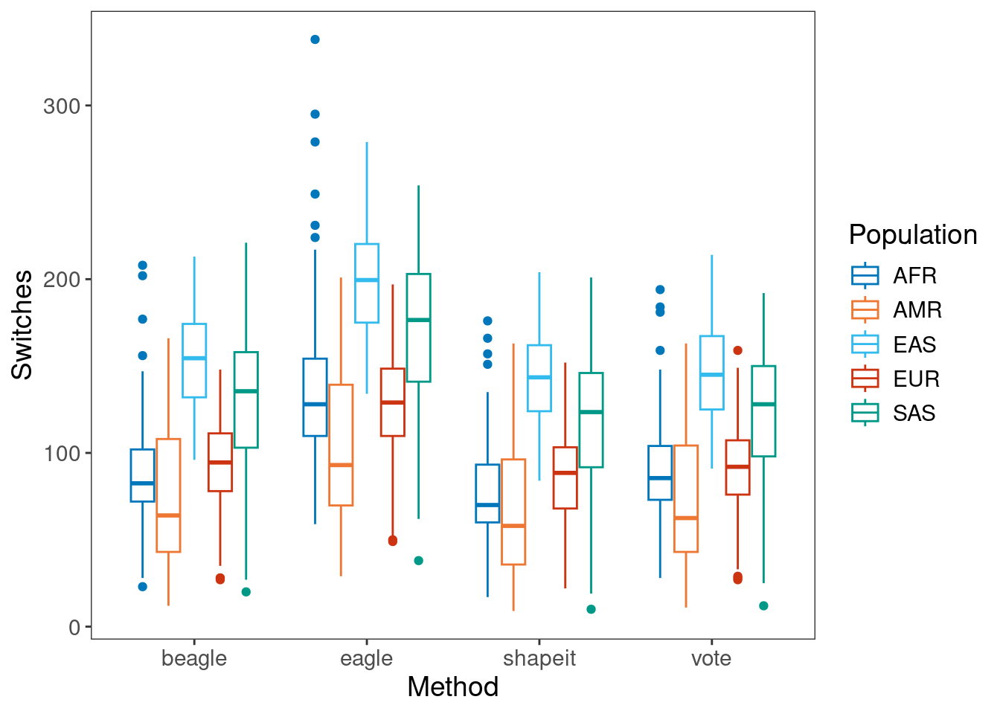
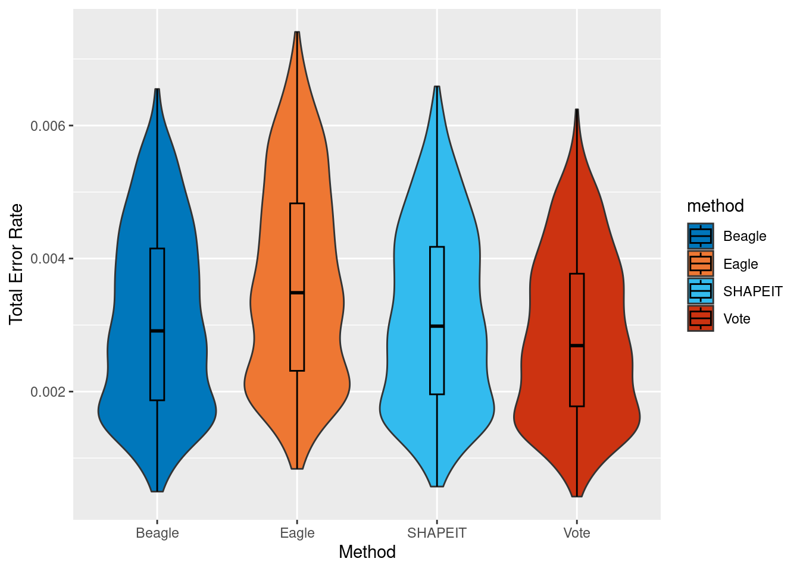
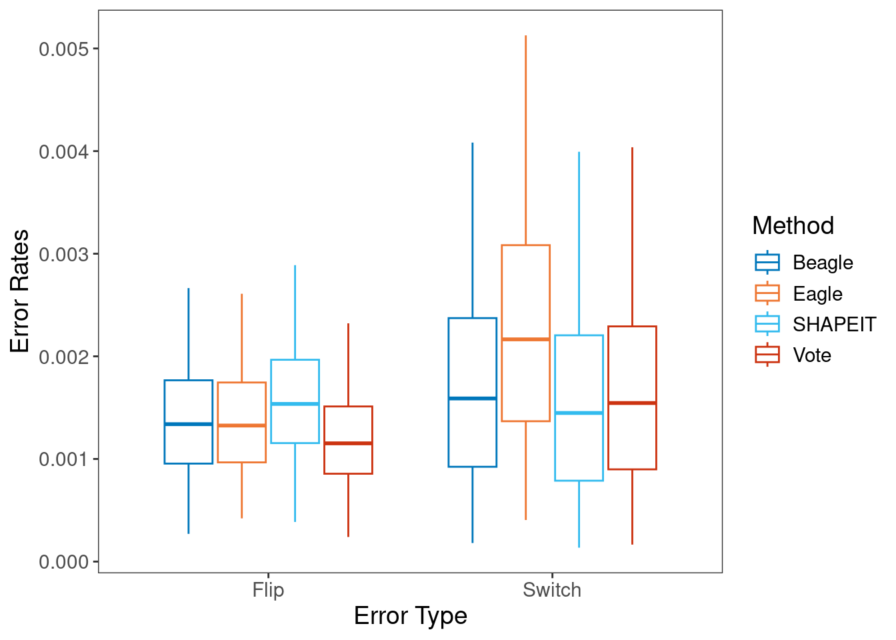
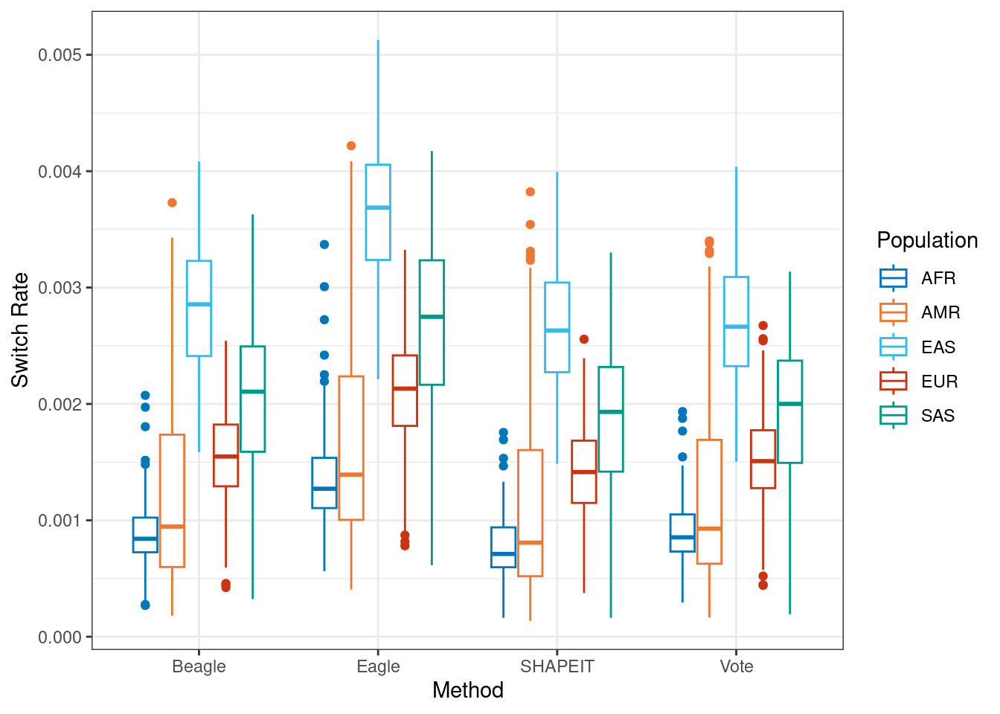
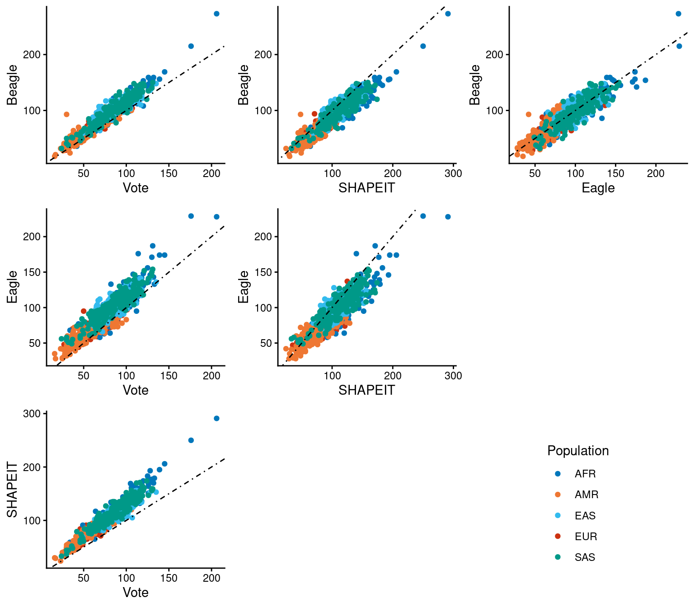
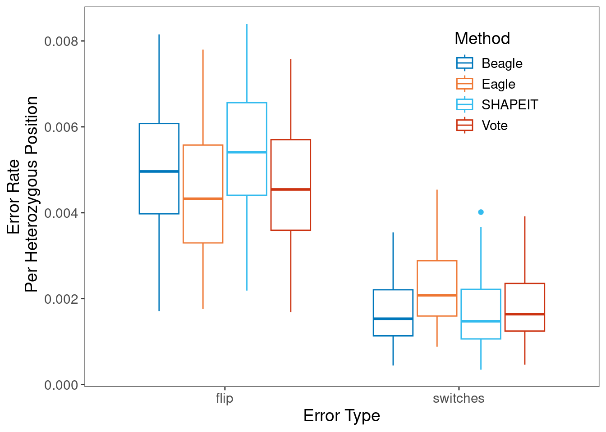

Voting Method Results
Andy Beck
2024-06-27
Last updated: 2024-11-22
Checks: 7 0
Knit directory: phasing_clean/
This reproducible R Markdown analysis was created with workflowr (version 1.7.1). The Checks tab describes the reproducibility checks that were applied when the results were created. The Past versions tab lists the development history.
Great! Since the R Markdown file has been committed to the Git repository, you know the exact version of the code that produced these results.
Great job! The global environment was empty. Objects defined in the global environment can affect the analysis in your R Markdown file in unknown ways. For reproduciblity it’s best to always run the code in an empty environment.
The command set.seed(20240501) was run prior to running
the code in the R Markdown file. Setting a seed ensures that any results
that rely on randomness, e.g. subsampling or permutations, are
reproducible.
Great job! Recording the operating system, R version, and package versions is critical for reproducibility.
Nice! There were no cached chunks for this analysis, so you can be confident that you successfully produced the results during this run.
Great job! Using relative paths to the files within your workflowr project makes it easier to run your code on other machines.
Great! You are using Git for version control. Tracking code development and connecting the code version to the results is critical for reproducibility.
The results in this page were generated with repository version d9d3024. See the Past versions tab to see a history of the changes made to the R Markdown and HTML files.
Note that you need to be careful to ensure that all relevant files for
the analysis have been committed to Git prior to generating the results
(you can use wflow_publish or
wflow_git_commit). workflowr only checks the R Markdown
file, but you know if there are other scripts or data files that it
depends on. Below is the status of the Git repository when the results
were generated:
Ignored files:
Ignored: .Rhistory
Ignored: .Rproj.user/
Ignored: .ipynb_checkpoints/
Ignored: analysis/figure/
Ignored: data/1kgp/chr1/
Ignored: data/1kgp/chr10/
Ignored: data/1kgp/chr11/
Ignored: data/1kgp/chr12/
Ignored: data/1kgp/chr13/
Ignored: data/1kgp/chr14/
Ignored: data/1kgp/chr15/
Ignored: data/1kgp/chr16/
Ignored: data/1kgp/chr17/
Ignored: data/1kgp/chr18/
Ignored: data/1kgp/chr19/
Ignored: data/1kgp/chr2/
Ignored: data/1kgp/chr20/
Ignored: data/1kgp/chr21/
Ignored: data/1kgp/chr22/
Ignored: data/1kgp/chr3/
Ignored: data/1kgp/chr4/
Ignored: data/1kgp/chr5/
Ignored: data/1kgp/chr6/
Ignored: data/1kgp/chr7/
Ignored: data/1kgp/chr8/
Ignored: data/1kgp/chr9/
Ignored: data/1kgp/exclude_samples/
Ignored: data/chr1.1kb.sorted.bed
Ignored: data/chr1.fasta
Ignored: data/chr1.fasta.fai
Ignored: data/chr1.sizes
Ignored: data/chr10.1kb.sorted.bed
Ignored: data/chr10.fasta
Ignored: data/chr10.fasta.fai
Ignored: data/chr10.sizes
Ignored: data/chr10_10k.bed
Ignored: data/chr10_gc1kb.bed
Ignored: data/chr10_gc1kb_pilot.bed
Ignored: data/chr10_mask.fasta
Ignored: data/chr10_mask.fasta.fai
Ignored: data/chr11.1kb.sorted.bed
Ignored: data/chr11.fasta
Ignored: data/chr11.fasta.fai
Ignored: data/chr11.sizes
Ignored: data/chr11_10k.bed
Ignored: data/chr11_gc1kb.bed
Ignored: data/chr11_gc1kb_pilot.bed
Ignored: data/chr11_mask.fasta
Ignored: data/chr11_mask.fasta.fai
Ignored: data/chr12.1kb.sorted.bed
Ignored: data/chr12.fasta
Ignored: data/chr12.fasta.fai
Ignored: data/chr12.sizes
Ignored: data/chr12_10k.bed
Ignored: data/chr12_gc1kb.bed
Ignored: data/chr12_gc1kb_pilot.bed
Ignored: data/chr12_mask.fasta
Ignored: data/chr12_mask.fasta.fai
Ignored: data/chr13.1kb.sorted.bed
Ignored: data/chr13.fasta
Ignored: data/chr13.fasta.fai
Ignored: data/chr13.sizes
Ignored: data/chr13_10k.bed
Ignored: data/chr13_gc1kb.bed
Ignored: data/chr13_gc1kb_pilot.bed
Ignored: data/chr13_mask.fasta
Ignored: data/chr13_mask.fasta.fai
Ignored: data/chr14.1kb.sorted.bed
Ignored: data/chr14.fasta
Ignored: data/chr14.fasta.fai
Ignored: data/chr14.sizes
Ignored: data/chr14_10k.bed
Ignored: data/chr14_gc1kb.bed
Ignored: data/chr14_gc1kb_pilot.bed
Ignored: data/chr14_mask.fasta
Ignored: data/chr14_mask.fasta.fai
Ignored: data/chr15.1kb.sorted.bed
Ignored: data/chr15.fasta
Ignored: data/chr15.fasta.fai
Ignored: data/chr15.sizes
Ignored: data/chr15_10k.bed
Ignored: data/chr15_gc1kb.bed
Ignored: data/chr15_gc1kb_pilot.bed
Ignored: data/chr15_mask.fasta
Ignored: data/chr15_mask.fasta.fai
Ignored: data/chr16.1kb.sorted.bed
Ignored: data/chr16.fasta
Ignored: data/chr16.fasta.fai
Ignored: data/chr16.sizes
Ignored: data/chr16_10k.bed
Ignored: data/chr16_gc1kb.bed
Ignored: data/chr16_gc1kb_pilot.bed
Ignored: data/chr16_mask.fasta
Ignored: data/chr16_mask.fasta.fai
Ignored: data/chr17.1kb.sorted.bed
Ignored: data/chr17.fasta
Ignored: data/chr17.fasta.fai
Ignored: data/chr17.sizes
Ignored: data/chr17_10k.bed
Ignored: data/chr17_gc1kb.bed
Ignored: data/chr17_gc1kb_pilot.bed
Ignored: data/chr17_mask.fasta
Ignored: data/chr17_mask.fasta.fai
Ignored: data/chr18.1kb.sorted.bed
Ignored: data/chr18.fasta
Ignored: data/chr18.fasta.fai
Ignored: data/chr18.sizes
Ignored: data/chr18_10k.bed
Ignored: data/chr18_gc1kb.bed
Ignored: data/chr18_gc1kb_pilot.bed
Ignored: data/chr18_mask.fasta
Ignored: data/chr18_mask.fasta.fai
Ignored: data/chr19.1kb.sorted.bed
Ignored: data/chr19.fasta
Ignored: data/chr19.fasta.fai
Ignored: data/chr19.sizes
Ignored: data/chr19_10k.bed
Ignored: data/chr19_gc1kb.bed
Ignored: data/chr19_gc1kb_pilot.bed
Ignored: data/chr19_mask.fasta
Ignored: data/chr19_mask.fasta.fai
Ignored: data/chr1_10k.bed
Ignored: data/chr1_gc1kb.bed
Ignored: data/chr1_gc1kb_pilot.bed
Ignored: data/chr1_mask.fasta
Ignored: data/chr1_mask.fasta.fai
Ignored: data/chr2.1kb.sorted.bed
Ignored: data/chr2.fasta
Ignored: data/chr2.fasta.fai
Ignored: data/chr2.sizes
Ignored: data/chr20.1kb.sorted.bed
Ignored: data/chr20.fasta
Ignored: data/chr20.fasta.fai
Ignored: data/chr20.sizes
Ignored: data/chr20_10k.bed
Ignored: data/chr20_gc1kb.bed
Ignored: data/chr20_gc1kb_pilot.bed
Ignored: data/chr20_mask.fasta
Ignored: data/chr20_mask.fasta.fai
Ignored: data/chr21.1kb.sorted.bed
Ignored: data/chr21.fasta
Ignored: data/chr21.fasta.fai
Ignored: data/chr21.sizes
Ignored: data/chr21_10k.bed
Ignored: data/chr21_gc1kb.bed
Ignored: data/chr21_gc1kb_pilot.bed
Ignored: data/chr21_mask.fasta
Ignored: data/chr21_mask.fasta.fai
Ignored: data/chr22.1kb.sorted.bed
Ignored: data/chr22.fasta
Ignored: data/chr22.fasta.fai
Ignored: data/chr22.sizes
Ignored: data/chr22_10k.bed
Ignored: data/chr22_gc1kb.bed
Ignored: data/chr22_gc1kb_pilot.bed
Ignored: data/chr22_mask.fasta
Ignored: data/chr22_mask.fasta.fai
Ignored: data/chr22_mask.fasta.fxi
Ignored: data/chr2_10k.bed
Ignored: data/chr2_gc1kb.bed
Ignored: data/chr2_gc1kb_pilot.bed
Ignored: data/chr2_mask.fasta
Ignored: data/chr2_mask.fasta.fai
Ignored: data/chr3.1kb.sorted.bed
Ignored: data/chr3.fasta
Ignored: data/chr3.fasta.fai
Ignored: data/chr3.sizes
Ignored: data/chr3_10k.bed
Ignored: data/chr3_gc1kb.bed
Ignored: data/chr3_gc1kb_pilot.bed
Ignored: data/chr3_mask.fasta
Ignored: data/chr3_mask.fasta.fai
Ignored: data/chr4.1kb.sorted.bed
Ignored: data/chr4.fasta
Ignored: data/chr4.fasta.fai
Ignored: data/chr4.sizes
Ignored: data/chr4_10k.bed
Ignored: data/chr4_gc1kb.bed
Ignored: data/chr4_gc1kb_pilot.bed
Ignored: data/chr4_mask.fasta
Ignored: data/chr4_mask.fasta.fai
Ignored: data/chr5.1kb.sorted.bed
Ignored: data/chr5.fasta
Ignored: data/chr5.fasta.fai
Ignored: data/chr5.sizes
Ignored: data/chr5_10k.bed
Ignored: data/chr5_gc1kb.bed
Ignored: data/chr5_gc1kb_pilot.bed
Ignored: data/chr5_mask.fasta
Ignored: data/chr5_mask.fasta.fai
Ignored: data/chr6.1kb.sorted.bed
Ignored: data/chr6.fasta
Ignored: data/chr6.fasta.fai
Ignored: data/chr6.sizes
Ignored: data/chr6_10k.bed
Ignored: data/chr6_gc1kb.bed
Ignored: data/chr6_gc1kb_pilot.bed
Ignored: data/chr6_mask.fasta
Ignored: data/chr6_mask.fasta.fai
Ignored: data/chr7.1kb.sorted.bed
Ignored: data/chr7.fasta
Ignored: data/chr7.fasta.fai
Ignored: data/chr7.sizes
Ignored: data/chr7_10k.bed
Ignored: data/chr7_gc1kb.bed
Ignored: data/chr7_gc1kb_pilot.bed
Ignored: data/chr7_mask.fasta
Ignored: data/chr7_mask.fasta.fai
Ignored: data/chr8.1kb.sorted.bed
Ignored: data/chr8.fasta
Ignored: data/chr8.fasta.fai
Ignored: data/chr8.sizes
Ignored: data/chr8_10k.bed
Ignored: data/chr8_gc1kb.bed
Ignored: data/chr8_gc1kb_pilot.bed
Ignored: data/chr8_mask.fasta
Ignored: data/chr8_mask.fasta.fai
Ignored: data/chr9.1kb.sorted.bed
Ignored: data/chr9.fasta
Ignored: data/chr9.fasta.fai
Ignored: data/chr9.sizes
Ignored: data/chr9_10k.bed
Ignored: data/chr9_gc1kb.bed
Ignored: data/chr9_gc1kb_pilot.bed
Ignored: data/chr9_mask.fasta
Ignored: data/chr9_mask.fasta.fai
Ignored: data/chrX.1kb.sorted.bed
Ignored: data/chrX.fasta
Ignored: data/chrX.fasta.fai
Ignored: data/chrX.sizes
Ignored: data/chrX_gc1kb.bed
Ignored: data/chrX_gc1kb_pilot.bed
Ignored: data/chrX_mask.fasta
Ignored: data/chrX_mask.fasta.fai
Ignored: data/decode/
Ignored: data/hg38.chrom.sizes
Ignored: data/mask_pilot_10_fasta.bed
Ignored: data/mask_pilot_11_fasta.bed
Ignored: data/mask_pilot_12_fasta.bed
Ignored: data/mask_pilot_13_fasta.bed
Ignored: data/mask_pilot_14_fasta.bed
Ignored: data/mask_pilot_15_fasta.bed
Ignored: data/mask_pilot_16_fasta.bed
Ignored: data/mask_pilot_17_fasta.bed
Ignored: data/mask_pilot_18_fasta.bed
Ignored: data/mask_pilot_19_fasta.bed
Ignored: data/mask_pilot_1_fasta.bed
Ignored: data/mask_pilot_20_fasta.bed
Ignored: data/mask_pilot_21_fasta.bed
Ignored: data/mask_pilot_22_fasta.bed
Ignored: data/mask_pilot_2_fasta.bed
Ignored: data/mask_pilot_3_fasta.bed
Ignored: data/mask_pilot_4_fasta.bed
Ignored: data/mask_pilot_5_fasta.bed
Ignored: data/mask_pilot_6_fasta.bed
Ignored: data/mask_pilot_7_fasta.bed
Ignored: data/mask_pilot_8_fasta.bed
Ignored: data/mask_pilot_9_fasta.bed
Ignored: data/ref_GRCh38.fna
Ignored: data/ref_GRCh38.fna.fai
Ignored: data/ref_GRCh38.fna.in
Ignored: data/ref_maps/
Ignored: output/alt_ref/
Ignored: output/switch_errors/
Ignored: output/trio_phase_1/
Ignored: output/trio_phase_10/
Ignored: output/trio_phase_11/
Ignored: output/trio_phase_12/
Ignored: output/trio_phase_13/
Ignored: output/trio_phase_14/
Ignored: output/trio_phase_15/
Ignored: output/trio_phase_16/
Ignored: output/trio_phase_17/
Ignored: output/trio_phase_18/
Ignored: output/trio_phase_19/
Ignored: output/trio_phase_2/
Ignored: output/trio_phase_20/
Ignored: output/trio_phase_21/
Ignored: output/trio_phase_22/
Ignored: output/trio_phase_3/
Ignored: output/trio_phase_4/
Ignored: output/trio_phase_5/
Ignored: output/trio_phase_6/
Ignored: output/trio_phase_7/
Ignored: output/trio_phase_8/
Ignored: output/trio_phase_9/
Ignored: output/vote_1/
Ignored: output/vote_15/
Ignored: output/vote_22/
Ignored: output/vote_x/
Ignored: scratch/
Untracked files:
Untracked: analysis/genomic_context.Rmd
Untracked: tmp.sh
Unstaged changes:
Modified: .gitignore
Modified: README.md
Modified: analysis/_site.yml
Modified: analysis/all_autosomes.Rmd
Modified: code/append_cpg.py
Modified: code/append_cpg_het.py
Modified: code/batch_annotate_het.sh
Modified: code/batch_annotate_switch.sh
Modified: code/batch_annotate_trio_switch.sh
Modified: code/batch_compare_trio.sh
Modified: code/batch_phase_sd.sh
Modified: code/batch_phase_trio.sh
Modified: code/batch_triple_hets.sh
Modified: code/common_functions.R
Modified: code/error_rates_per_bin.R
Modified: code/get_maf_at_errors_trio.R
Modified: code/trio_phase_results.R
Note that any generated files, e.g. HTML, png, CSS, etc., are not included in this status report because it is ok for generated content to have uncommitted changes.
These are the previous versions of the repository in which changes were
made to the R Markdown (analysis/vote.Rmd) and HTML
(docs/vote.html) files. If you’ve configured a remote Git
repository (see ?wflow_git_remote), click on the hyperlinks
in the table below to view the files as they were in that past version.
| File | Version | Author | Date | Message |
|---|---|---|---|---|
| Rmd | d9d3024 | Andy Beck | 2024-11-22 | wflow_publish("analysis/vote.Rmd") |
| html | 551762d | Andy Beck | 2024-07-02 | Build site. |
| Rmd | a391ebe | Andy Beck | 2024-07-02 | wflow_publish("analysis/vote.Rmd") |
| html | dadd116 | Andy Beck | 2024-07-01 | Build site. |
| html | 6babd9f | Andy Beck | 2024-06-28 | Build site. |
| Rmd | b153519 | Andy Beck | 2024-06-28 | wflow_publish(c("analysis/index.Rmd", "analysis/vote.Rmd")) |
| html | 33d94a8 | Andy Beck | 2024-06-28 | Build site. |
| Rmd | fd77035 | Andy Beck | 2024-06-28 | wflow_publish("analysis/vote.Rmd") |
| html | 01a1afb | Andy Beck | 2024-06-28 | Build site. |
| Rmd | 28e7b45 | Andy Beck | 2024-06-28 | wflow_publish("analysis/vote.Rmd") |
library(tidyverse)
library(grid)
library(gridExtra)
library(yaml)
config_obj <- yaml::read_yaml("_config.yaml")
cbPalette <- c("#999999", "#E69F00", "#56B4E9", "#009E73", "#F0E442", "#0072B2", "#D55E00", "#CC79A7", "#000")Subject Information
Chromosome X Synthetic Diploids
sample_info_df <- read_csv("data/1kgp/subject_info.csv") %>%
select(SAMPLE_NAME, POPULATION, SUPER)Rows: 3202 Columns: 6
── Column specification ────────────────────────────────────────────────────────
Delimiter: ","
chr (5): SAMPLE_NAME, POPULATION, SUPER, fatherID, motherID
dbl (1): sex
ℹ Use `spec()` to retrieve the full column specification for this data.
ℹ Specify the column types or set `show_col_types = FALSE` to quiet this message.pair_info_df <- read_delim("data/sample_pairs.csv", col_names = c("POP", "ID1", "ID2"))Rows: 1000 Columns: 3
── Column specification ────────────────────────────────────────────────────────
Delimiter: ","
chr (3): POP, ID1, ID2
ℹ Use `spec()` to retrieve the full column specification for this data.
ℹ Specify the column types or set `show_col_types = FALSE` to quiet this message.pair_info_df <- left_join(pair_info_df, sample_info_df, by = c("ID1"="SAMPLE_NAME")) %>%
rename(SP = SUPER) %>%
select(-POPULATION)
pair_info_df$pair_id <- 1:1000Trio Probands
ped_df <- read_table("data/1kgp/1kGP.3202_samples.pedigree_info.txt")
── Column specification ────────────────────────────────────────────────────────
cols(
sampleID = col_character(),
fatherID = col_character(),
motherID = col_character(),
sex = col_double()
)child_ids <- ped_df %>% filter(fatherID != "0" & motherID != "0") %>% pull(sampleID)
unrel_ids <- scan("data/1kgp/unrelated_subjects.txt", what = character())
df_subj_rel <- sample_info_df %>%
filter(SAMPLE_NAME %in% child_ids)
df_subj_rel$id2 <- 1:602
df_subj_unrel <- sample_info_df %>%
filter(SAMPLE_NAME %in% unrel_ids)Chromosome X Results
df_switch_x <- read_csv(paste0(config_obj$base_dir, "/output/switch_errors/switch_errors/summary.csv"), show_col_types = F)
df_vote_x <- read_csv(paste0(config_obj$base_dir, "/output/vote_x/summary.csv"), show_col_types = F)Let’s first look at the number of switches and flips per synthetic diploid across methods:
df_x <- df_switch_x %>%
select(((contains("n_other") | contains("n_flip")) & !contains("cpg")), pair_id) %>%
pivot_longer(-pair_id, names_to = c("drop","error", "method"), names_sep = "_", values_to = "n") %>%
select(-drop) %>%
pivot_wider(names_from = "error", values_from = "n", id_cols = c("pair_id","method")) %>%
rename(switches = other) %>%
bind_rows({
df_vote_x %>%
select(((contains("n_other") | contains("n_flip")) & !contains("cpg")), pair_id) %>%
pivot_longer(-pair_id, names_to = c("drop","error", "method"), names_sep = "_", values_to = "n") %>%
select(-drop) %>%
pivot_wider(names_from = "error", values_from = "n", id_cols = c("pair_id","method")) %>%
rename(switches = other)
}) %>%
arrange(pair_id)
df_x <- df_x %>%
left_join({pair_info_df %>% select(pair_id, SP)})Joining with `by = join_by(pair_id)`df_x %>%
pivot_longer(switches:flip, names_to = "error_type", values_to = "n") %>%
mutate(method = factor(method, levels = c("beagle", "eagle", "shapeit", "vote"), labels = c("Beagle", "Eagle", "SHAPEIT", "Vote"))) %>%
ggplot(aes(x = error_type, y = n, color = method)) +
geom_boxplot() +
xlab("Error Type") +
ylab("Errors") +
scale_color_manual(values = cbPalette) +
labs(color = "Method")
| Version | Author | Date |
|---|---|---|
| 01a1afb | Andy Beck | 2024-06-28 |
Let’s see if there are population level differences:
df_x %>%
ggplot(aes(x = method, y = switches, colour = SP)) +
geom_boxplot() +
xlab("Method") +
ylab("Switches") +
labs(colour = "Population") +
scale_colour_manual(values = cbPalette)
| Version | Author | Date |
|---|---|---|
| 01a1afb | Andy Beck | 2024-06-28 |
df_x %>%
ggplot(aes(x = method, y = flip, colour = SP)) +
geom_boxplot() +
xlab("Method") +
ylab("Flips") +
labs(colour = "Population") +
scale_colour_manual(values = cbPalette)
| Version | Author | Date |
|---|---|---|
| 01a1afb | Andy Beck | 2024-06-28 |
Rates:
df_x_rate <- df_switch_x %>%
mutate(Beagle_Flip = n_flip_beagle / n_hets,
Eagle_Flip = n_flip_eagle / n_hets,
SHAPEIT_Flip = n_flip_shapeit / n_hets,
Beagle_Switch = n_other_beagle / n_hets,
Eagle_Switch = n_other_eagle / n_hets,
SHAPEIT_Switch = n_other_shapeit / n_hets) %>%
select(contains("Flip", ignore.case = F), contains("Switch", ignore.case = F), pair_id) %>%
pivot_longer(-pair_id, names_to = c("method", "type"), names_sep = "_", values_to = "rate") %>%
pivot_wider(names_from = "method", values_from = "rate", id_cols = c("pair_id","type")) %>%
left_join({
df_vote_x %>%
mutate(Vote_Flip = n_flip_vote / n_hets,
Vote_Switch = n_other_vote / n_hets) %>%
select(contains("Flip", ignore.case = F), contains("Switch", ignore.case = F), pair_id) %>%
pivot_longer(-pair_id, names_to = c("method", "type"), names_sep = "_", values_to = "rate") %>%
pivot_wider(names_from = "method", values_from = "rate", id_cols = c("pair_id","type"))
}, by = c("pair_id", "type")) %>%
arrange(pair_id)
df_x_rate <- df_x_rate %>%
left_join({pair_info_df %>% select(pair_id, SP)})Joining with `by = join_by(pair_id)`df_x_rate %>%
pivot_longer(Beagle:Vote, names_to = "method", values_to = "rate") %>%
mutate(method = factor(method, levels = c("Beagle", "Eagle", "SHAPEIT", "Vote"), labels = c("Beagle", "Eagle", "SHAPEIT", "Vote"))) %>%
ggplot(aes(x = type, y = rate, color = method)) +
geom_boxplot() +
xlab("Error Type") +
ylab("Errors") +
scale_color_manual(values = cbPalette) +
labs(color = "Method")
Let’s see if there are population-level differences:
df_x_rate %>%
pivot_longer(Beagle:Vote, names_to = "method", values_to = "rate") %>%
mutate(method = factor(method, levels = c("Beagle", "Eagle", "SHAPEIT", "Vote"), labels = c("Beagle", "Eagle", "SHAPEIT", "Vote"))) %>%
filter(type=="Switch") %>%
ggplot(aes(x = method, y = rate, colour = SP)) +
geom_boxplot() +
xlab("Method") +
ylab("Switch Rate") +
labs(colour = "Population") +
scale_colour_manual(values = cbPalette)
| Version | Author | Date |
|---|---|---|
| 01a1afb | Andy Beck | 2024-06-28 |
df_x_rate %>%
pivot_longer(Beagle:Vote, names_to = "method", values_to = "rate") %>%
mutate(method = factor(method, levels = c("Beagle", "Eagle", "SHAPEIT", "Vote"), labels = c("Beagle", "Eagle", "SHAPEIT", "Vote"))) %>%
filter(type=="Flip") %>%
ggplot(aes(x = method, y = rate, colour = SP)) +
geom_boxplot() +
xlab("Method") +
ylab("Flip Rate") +
labs(colour = "Population") +
scale_colour_manual(values = cbPalette)
And finally, let’s look at each pair of methods and each individual synthetic diploid:
sub_plot <- function(df, x, y, x_lab, y_lab){
p1 <- df %>%
ggplot(aes(x = !! sym(x), y = !! sym(y), colour = SP)) +
geom_point() +
geom_abline(slope = 1, intercept = 0, linetype = "dotdash") +
xlab(x_lab) +
ylab(y_lab) +
scale_color_manual(values = cbPalette) +
labs(colour = "Population") +
theme_classic()
return(p1)
}
pairwise_plots <- function(df, type = "switches"){
df_plot <- df %>%
select(pair_id, SP, method, !! sym(type)) %>%
pivot_wider(names_from = method, values_from = !! sym(type), id_cols = c("pair_id", "SP"))
p1 <- sub_plot(df_plot, "vote", "beagle", "Vote", "Beagle")
p_legend <- cowplot::get_legend(p1)
p1 <- p1 + guides(colour="none")
p2 <- sub_plot(df_plot, "shapeit", "beagle", "SHAPEIT", "Beagle") + guides(colour="none")
p3 <- sub_plot(df_plot, "eagle", "beagle", "Eagle", "Beagle") + guides(colour="none")
p4 <- sub_plot(df_plot, "vote", "eagle", "Vote", "Eagle") + guides(colour="none")
p5 <- sub_plot(df_plot, "shapeit", "eagle", "SHAPEIT", "Eagle") + guides(colour="none")
p6 <- sub_plot(df_plot, "vote", "shapeit", "Vote", "SHAPEIT") + guides(colour="none")
return(grid.arrange(p1, p2, p3, p4, p5, p6, p_legend,
layout_matrix = rbind(c(1,2,3), c(4, 5, NA), c(6, NA, 7))))
}pairwise_plots(df_x, "switches")Warning in get_plot_component(plot, "guide-box"): Multiple components found;
returning the first one. To return all, use `return_all = TRUE`.
pairwise_plots(df_x, "flip")Warning in get_plot_component(plot, "guide-box"): Multiple components found;
returning the first one. To return all, use `return_all = TRUE`.
Chromosome 15
df_switch_15 <- read_csv(paste0(config_obj$base_dir, "/output/trio_phase_15/switch_errors/summary.csv"), show_col_types = F)
df_vote_15 <- read_csv(paste0(config_obj$base_dir, "/output/vote_15/summary.csv"), show_col_types = F)
df_15 <- df_switch_15 %>%
select(((contains("n_other") | contains("n_flip")) & !contains("cpg")), pair_id) %>%
pivot_longer(-pair_id, names_to = c("drop","error", "method"), names_sep = "_", values_to = "n") %>%
select(-drop) %>%
pivot_wider(names_from = "error", values_from = "n", id_cols = c("pair_id","method")) %>%
rename(switches = other) %>%
bind_rows({
df_vote_15 %>%
select(((contains("n_other") | contains("n_flip")) & !contains("cpg")), pair_id) %>%
pivot_longer(-pair_id, names_to = c("drop","error", "method"), names_sep = "_", values_to = "n") %>%
select(-drop) %>%
pivot_wider(names_from = "error", values_from = "n", id_cols = c("pair_id","method")) %>%
rename(switches = other)
}) %>%
arrange(pair_id)
df_15 <- df_15 %>%
left_join({df_subj_rel %>% select(id2, SUPER) %>% rename(pair_id = id2, SP = SUPER)})Joining with `by = join_by(pair_id)`df_15 %>%
pivot_longer(switches:flip, names_to = "error_type", values_to = "n") %>%
mutate(method = factor(method, levels = c("beagle", "eagle", "shapeit", "vote"), labels = c("Beagle", "Eagle", "SHAPEIT", "Vote"))) %>%
ggplot(aes(x = error_type, y = n, color = method)) +
geom_boxplot() +
xlab("Error Type") +
ylab("Errors") +
scale_color_manual(values = cbPalette) +
labs(color = "Method")
Let’s see if there are population-level differences:
df_15 %>%
ggplot(aes(x = method, y = switches, colour = SP)) +
geom_boxplot() +
xlab("Method") +
ylab("Switches") +
labs(colour = "Population") +
scale_colour_manual(values = cbPalette)
df_15 %>%
ggplot(aes(x = method, y = flip, colour = SP)) +
geom_boxplot() +
xlab("Method") +
ylab("Flips") +
labs(colour = "Population") +
scale_colour_manual(values = cbPalette)
pairwise_plots(df_15, "switches")Warning in get_plot_component(plot, "guide-box"): Multiple components found;
returning the first one. To return all, use `return_all = TRUE`.
pairwise_plots(df_15, "flip")Warning in get_plot_component(plot, "guide-box"): Multiple components found;
returning the first one. To return all, use `return_all = TRUE`.
| Version | Author | Date |
|---|---|---|
| 6babd9f | Andy Beck | 2024-06-28 |
Chromosome 22
df_switch_22 <- read_csv(paste0(config_obj$base_dir, "/output/trio_phase_22/switch_errors/summary.csv"), show_col_types = F)
df_vote_22 <- read_csv(paste0(config_obj$base_dir, "/output/vote_22/summary.csv"), show_col_types = F)
df_22 <- df_switch_22 %>%
select(((contains("n_other") | contains("n_flip")) & !contains("cpg")), pair_id) %>%
pivot_longer(-pair_id, names_to = c("drop","error", "method"), names_sep = "_", values_to = "n") %>%
select(-drop) %>%
pivot_wider(names_from = "error", values_from = "n", id_cols = c("pair_id","method")) %>%
rename(switches = other) %>%
bind_rows({
df_vote_22 %>%
select(((contains("n_other") | contains("n_flip")) & !contains("cpg")), pair_id) %>%
pivot_longer(-pair_id, names_to = c("drop","error", "method"), names_sep = "_", values_to = "n") %>%
select(-drop) %>%
pivot_wider(names_from = "error", values_from = "n", id_cols = c("pair_id","method")) %>%
rename(switches = other)
}) %>%
arrange(pair_id)
df_22 <- df_22 %>%
left_join({df_subj_rel %>% select(id2, SUPER) %>% rename(pair_id = id2, SP = SUPER)})Joining with `by = join_by(pair_id)`df_22 %>%
pivot_longer(switches:flip, names_to = "error_type", values_to = "n") %>%
mutate(method = factor(method, levels = c("beagle", "eagle", "shapeit", "vote"), labels = c("Beagle", "Eagle", "SHAPEIT", "Vote"))) %>%
ggplot(aes(x = error_type, y = n, color = method)) +
geom_boxplot() +
xlab("Error Type") +
ylab("Errors") +
scale_color_manual(values = cbPalette) +
labs(color = "Method")
| Version | Author | Date |
|---|---|---|
| 6babd9f | Andy Beck | 2024-06-28 |
Let’s see if there are population-level differences:
df_22 %>%
ggplot(aes(x = method, y = switches, colour = SP)) +
geom_boxplot() +
xlab("Method") +
ylab("Switches") +
labs(colour = "Population") +
scale_colour_manual(values = cbPalette)
| Version | Author | Date |
|---|---|---|
| 6babd9f | Andy Beck | 2024-06-28 |
df_22 %>%
ggplot(aes(x = method, y = flip, colour = SP)) +
geom_boxplot() +
xlab("Method") +
ylab("Flips") +
labs(colour = "Population") +
scale_colour_manual(values = cbPalette)
pairwise_plots(df_22, "switches")Warning in get_plot_component(plot, "guide-box"): Multiple components found;
returning the first one. To return all, use `return_all = TRUE`.
pairwise_plots(df_22, "flip")Warning in get_plot_component(plot, "guide-box"): Multiple components found;
returning the first one. To return all, use `return_all = TRUE`.
| Version | Author | Date |
|---|---|---|
| 551762d | Andy Beck | 2024-07-02 |
Chromosome 1
df_switch_1 <- read_csv(paste0(config_obj$base_dir, "/output/trio_phase_1/switch_errors/summary.csv"), show_col_types = F)
df_vote_1 <- read_csv(paste0(config_obj$base_dir, "/output/vote_1/summary.csv"), show_col_types = F)
df_1 <- df_switch_1 %>%
select(((contains("n_other") | contains("n_flip")) & !contains("cpg")), pair_id) %>%
pivot_longer(-pair_id, names_to = c("drop","error", "method"), names_sep = "_", values_to = "n") %>%
select(-drop) %>%
pivot_wider(names_from = "error", values_from = "n", id_cols = c("pair_id","method")) %>%
rename(switches = other) %>%
bind_rows({
df_vote_1 %>%
select(((contains("n_other") | contains("n_flip")) & !contains("cpg")), pair_id) %>%
pivot_longer(-pair_id, names_to = c("drop","error", "method"), names_sep = "_", values_to = "n") %>%
select(-drop) %>%
pivot_wider(names_from = "error", values_from = "n", id_cols = c("pair_id","method")) %>%
rename(switches = other)
}) %>%
arrange(pair_id)
df_1 <- df_1 %>%
left_join({df_subj_rel %>% select(id2, SUPER) %>% rename(pair_id = id2, SP = SUPER)})Joining with `by = join_by(pair_id)`df_1 %>%
pivot_longer(switches:flip, names_to = "error_type", values_to = "n") %>%
mutate(method = factor(method, levels = c("beagle", "eagle", "shapeit", "vote"), labels = c("Beagle", "Eagle", "SHAPEIT", "Vote"))) %>%
ggplot(aes(x = error_type, y = n, color = method)) +
geom_boxplot() +
xlab("Error Type") +
ylab("Errors") +
scale_color_manual(values = cbPalette) +
labs(color = "Method")
| Version | Author | Date |
|---|---|---|
| 551762d | Andy Beck | 2024-07-02 |
Let’s see if there are population-level differences:
df_1 %>%
ggplot(aes(x = method, y = switches, colour = SP)) +
geom_boxplot() +
xlab("Method") +
ylab("Switches") +
labs(colour = "Population") +
scale_colour_manual(values = cbPalette)
| Version | Author | Date |
|---|---|---|
| 551762d | Andy Beck | 2024-07-02 |
df_1 %>%
ggplot(aes(x = method, y = flip, colour = SP)) +
geom_boxplot() +
xlab("Method") +
ylab("Flips") +
labs(colour = "Population") +
scale_colour_manual(values = cbPalette)
pairwise_plots(df_1, "switches")Warning in get_plot_component(plot, "guide-box"): Multiple components found;
returning the first one. To return all, use `return_all = TRUE`.pairwise_plots(df_1, "flip")Warning in get_plot_component(plot, "guide-box"): Multiple components found;
returning the first one. To return all, use `return_all = TRUE`.
sessionInfo()R version 4.4.2 (2024-10-31)
Platform: x86_64-pc-linux-gnu
Running under: Ubuntu 20.04.6 LTS
Matrix products: default
BLAS: /usr/lib/x86_64-linux-gnu/openblas-pthread/libblas.so.3
LAPACK: /usr/lib/x86_64-linux-gnu/openblas-pthread/liblapack.so.3; LAPACK version 3.9.0
locale:
[1] LC_CTYPE=en_US.UTF-8 LC_NUMERIC=C
[3] LC_TIME=en_US.UTF-8 LC_COLLATE=en_US.UTF-8
[5] LC_MONETARY=en_US.UTF-8 LC_MESSAGES=en_US.UTF-8
[7] LC_PAPER=en_US.UTF-8 LC_NAME=C
[9] LC_ADDRESS=C LC_TELEPHONE=C
[11] LC_MEASUREMENT=en_US.UTF-8 LC_IDENTIFICATION=C
time zone: America/New_York
tzcode source: system (glibc)
attached base packages:
[1] grid stats graphics grDevices utils datasets methods
[8] base
other attached packages:
[1] yaml_2.3.10 gridExtra_2.3 lubridate_1.9.3 forcats_1.0.0
[5] stringr_1.5.1 dplyr_1.1.4 purrr_1.0.2 readr_2.1.5
[9] tidyr_1.3.1 tibble_3.2.1 ggplot2_3.5.1 tidyverse_2.0.0
[13] workflowr_1.7.1
loaded via a namespace (and not attached):
[1] gtable_0.3.6 xfun_0.48 bslib_0.8.0 processx_3.8.4
[5] callr_3.7.6 tzdb_0.4.0 vctrs_0.6.5 tools_4.4.2
[9] ps_1.8.1 generics_0.1.3 parallel_4.4.2 fansi_1.0.6
[13] highr_0.11 pkgconfig_2.0.3 lifecycle_1.0.4 compiler_4.4.2
[17] farver_2.1.2 git2r_0.33.0 munsell_0.5.1 getPass_0.2-4
[21] httpuv_1.6.15 htmltools_0.5.8.1 sass_0.4.9 later_1.3.2
[25] pillar_1.9.0 crayon_1.5.3 jquerylib_0.1.4 whisker_0.4.1
[29] cachem_1.1.0 tidyselect_1.2.1 digest_0.6.37 stringi_1.8.4
[33] labeling_0.4.3 cowplot_1.1.3 rprojroot_2.0.4 fastmap_1.2.0
[37] archive_1.1.8 colorspace_2.1-1 cli_3.6.3 magrittr_2.0.3
[41] utf8_1.2.4 withr_3.0.2 scales_1.3.0 promises_1.3.0
[45] bit64_4.0.5 timechange_0.3.0 rmarkdown_2.28 httr_1.4.7
[49] bit_4.5.0 hms_1.1.3 evaluate_1.0.1 knitr_1.48
[53] rlang_1.1.4 Rcpp_1.0.13 glue_1.8.0 rstudioapi_0.17.1
[57] vroom_1.6.5 jsonlite_1.8.9 R6_2.5.1 fs_1.6.5